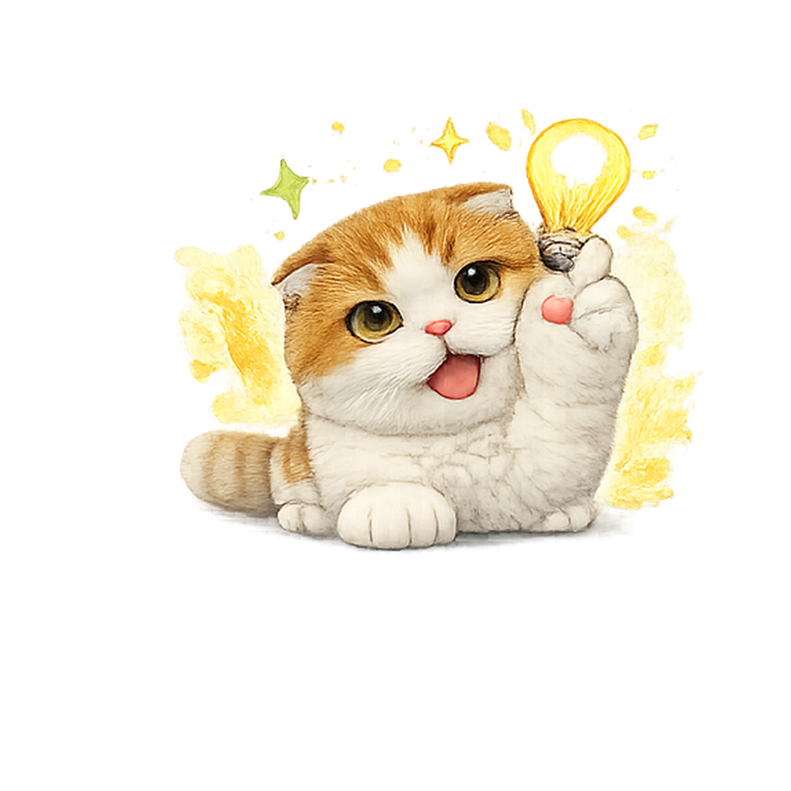
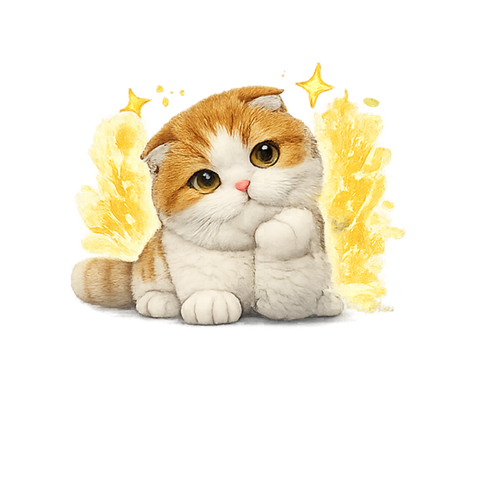
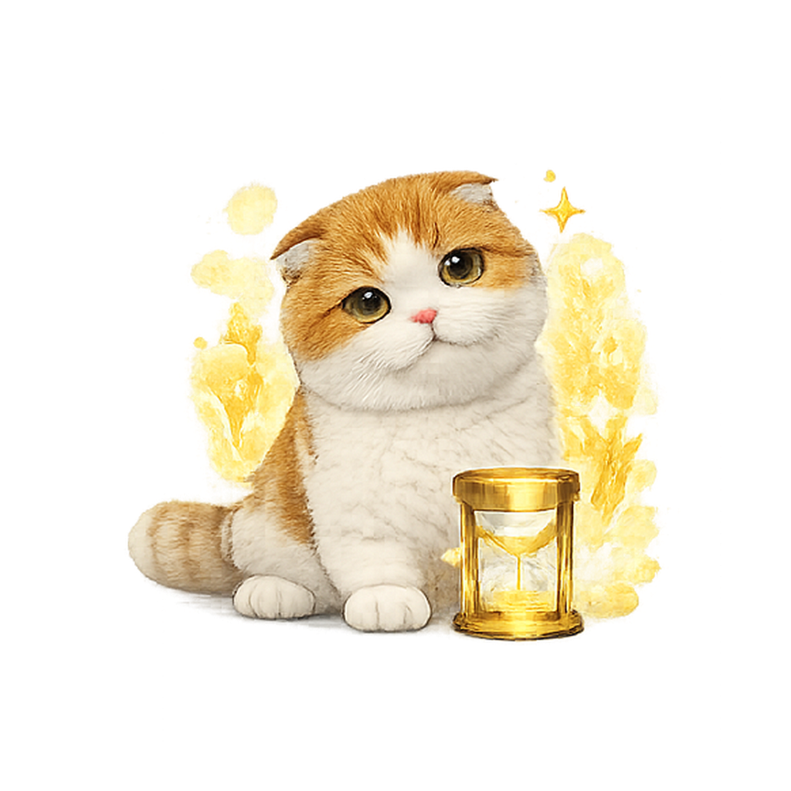
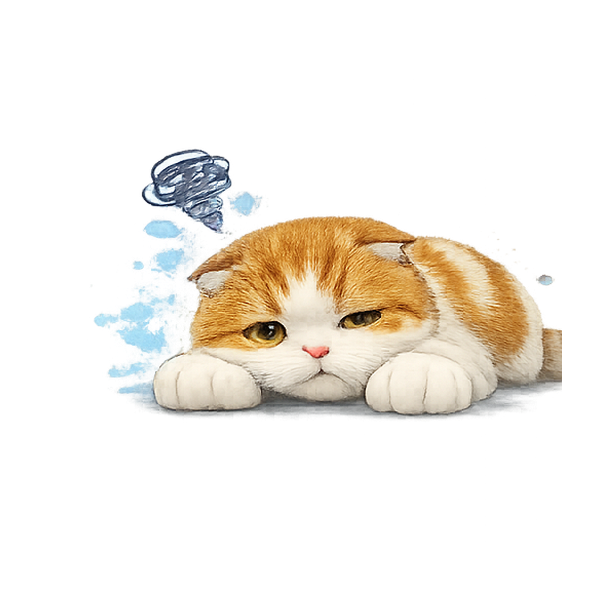
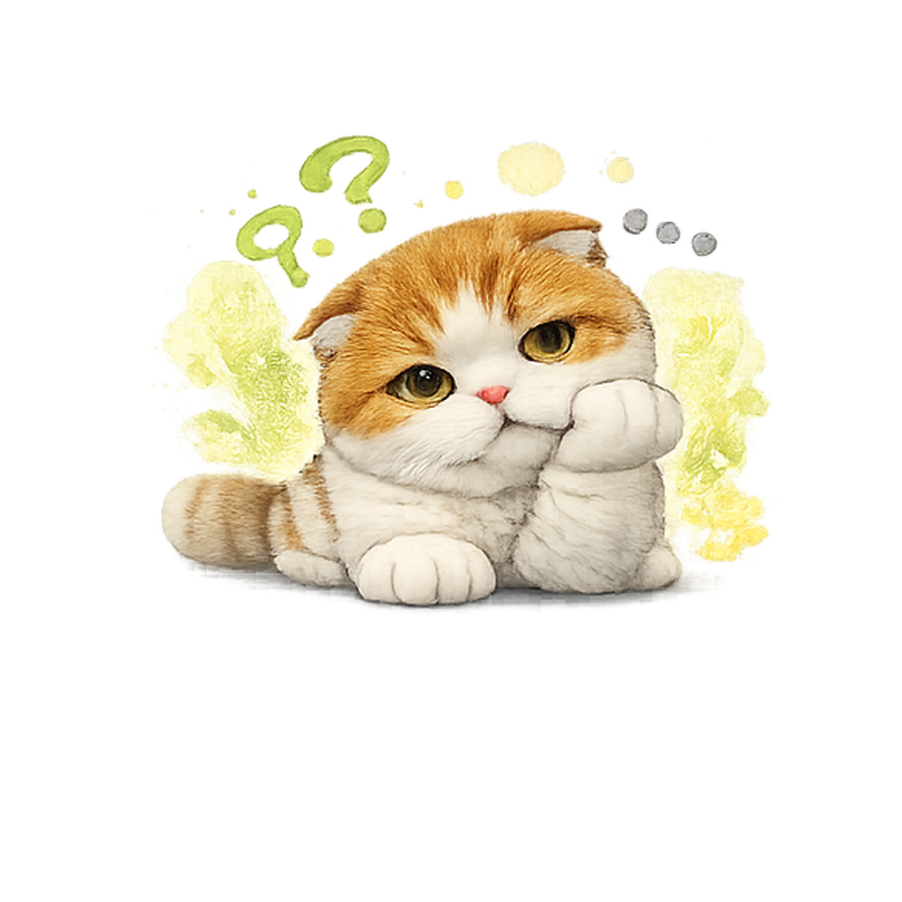

🐾
마루의 가위바위보
3
잠시 후 시작!

친구들과 한 판?
QR로 모이고, 마루랑 같이 가위바위보!
로그인하면 승률·벌칙 기록이 저장돼요 🏆
또는
게스트 모드에서는 게임 기록이 저장되지 않습니다

K-CULTURE × PARTY GAME
가위바위보!
QR로 모이고 마루랑 한 판 🐾
진 사람이 벌칙!
K놀이 #001 · 한국 파티 문화의 새 챕터 🇰🇷
설정

QR 스캔!
호스트 화면의 QR코드를 카메라로 비춰주세요.
지원 안 되면 방코드를 직접 입력할 수 있어요.
📷 아래 버튼을 눌러 QR을 스캔하세요
방장 모드!
QR이나 방 코드를 친구한테 보여주세요.
마루가 입장을 기다리고 있어요 🐾
이번 게임 벌칙
----
정원 마감
방 정원이 가득 차서 더 이상 참여할 수 없습니다.
방 정원이 가득 차서 더 이상 참여할 수 없습니다.
참가자 목록
🎯 술래 숫자
참가!
게임방 참여
방 코드랑 닉네임 알려줘!
마루가 자리 잡아둘게 🐾
닉네임
대기 중!
호스트가 벌칙 정하고 시작할 때까지
잠깐만 기다려줘 🍵
이번 게임 벌칙
아직 벌칙이 설정되지 않았습니다.
참가자 목록
벌칙 갓!
벌칙 설정
진 사람이 뭘 할까? 마루가 적어둔다 📝
여기에 벌칙을 입력하세요
자주 사용한 벌칙
한 판 더?
친구들 다 모이면
마루가 새 판! 🐾
👑 호스트 - -
방 코드: ABCD
이번 게임 벌칙
아직 벌칙이 설정되지 않았습니다.
🎯 술래 숫자
참여자 목록 (0명)
레디!
모두 ✋ 누르면
마루가 시작 신호!
참가자 준비 현황
자, 가위바위보!
라운드 1
마루를 따라 하나만 선택해 ✊✌️🖐
5남은 시간
0선택 완료
0참가자
관전 중!
라운드 1
모두 선택할 때까지
마루랑 같이 지켜봐 👀
5남은 시간
0선택 완료
0참가자
참가자 선택 현황
결과 발표!
승리!
다음 라운드를 기다려주세요.
이번 벌칙
라운드 결과
세이프!
우선안전!
이번 재게임에서는 빠지고 최종 술래가 나올 때까지 기다려주세요.
남은 참여자들만 재게임을 진행 중입니다 🍵
개인전적
최종 결과
참가자별 승률·벌칙 횟수를
마루가 정리했어 📊
| 참가자 | 승 | 패 | 무 | 승률 | 벌칙 |
|---|

아이고~
술래 확정!
벌칙을 준비하세요. 게임이 계속 진행 중입니다...
이번 벌칙
🏆 게임 승률
현재 게임방 누적 기록
| 참가자 | 승 | 패 | 무 | 승률 |
|---|
🏆 내 누적 기록
로그인 계정에 저장된 전체 게임 기록입니다.
기록을 불러오는 중...
🚪 나가기
👑 다음 호스트 선택
게임을 이어받을 다음 호스트를 선택해주세요.
🎮 새 게임 초대
호스트가 같은 방에서 새 게임을 시작합니다!
🎮 게임 초대 중...
참가자들에게 초대를 보냈습니다. 잠시 후 자동으로 시작됩니다.

외부 브라우저에서 열어주세요
게임 메뉴
소리
게임 진행 중에는 언어·계정·법적 고지 설정을 열 수 없습니다. 게임이 끝나면 설정에서 이용하세요.
정말 나가시겠어요?
게임방을 나가면 다시 들어올 수 없을 수도 있어요 🐾